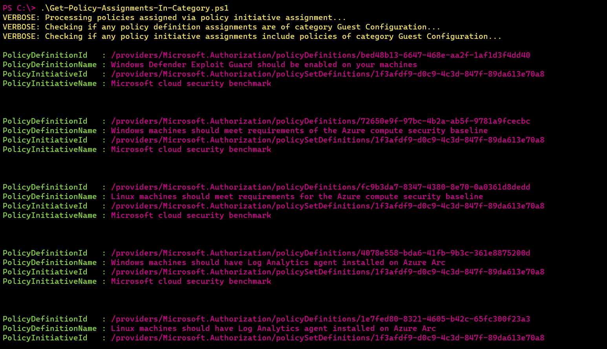

How to Get All Azure Policy Assignments of a Specific Category?
I’ve been in quite a pickle recently: I needed to find out how many and what Azure Policy definitions from Guest Configuration category are currently assigned to my subscription, so that I could understand if any of those policies are applicable to Azure Arc-enabled servers that are residing in the same subscription. Why?
Well, because Guest Configuration is a billed functionality, when it comes to Azure Arc. In this case it’s good to get an overview if any policies related to the billed functionality are enabled in order to further evaluate if you want to use this functionality or not (and therefore disable it to avoid undesired billing). You may also have different use cases for why you would want to retrieve the same information from Azure Policy🧐
After some time investigating I discovered that it’s quite a challenging to retrieve this kind of information in Azure portal: you can see the category of every single Azure Policy definition in the list of all definitions, but you can’t use policy category as a filter on assignments or compliance page. There’s no single-line solution in Azure CLI either.
That’s when I got lazy once again and leaned back to my dear friend PowerShell to achieve this😅 Following PowerShell script retrieves all policy definition assignments coming both from regular policy assignments and policy initiative assignments. If any of the assigned policies belong to the requested category, like Guest Configuration in my case, information about those policies will be provided as output upon script execution.
You can find the PowerShell script in my GitHub repo: Get-Policy-Assignments-In-Category.ps1
The output will look something like the screenshot below:

Already tested it out? Let me know how it went!🤗
That’s it from me this time, thanks for checking in!💖
If this article was helpful, I’d love to hear about it! You can reach out to me on LinkedIn, Twitter, GitHub or by using the contact form on this page.😺
Stay secure, stay safe.
Till we connect again!😻